🇹🇼 第四章 戰後臺灣的政治
國中歷史學習平台 • 威權體制到政治民主化歷程
📖 單元引言
第二次世界大戰結束後，臺灣與澎湖由中華民國接收與治理。戰後初期，由於治臺大權集聚、民生凋敝及社會隔閡，最終引爆了二二八事件。隨後政府為了因應國共內戰，實施了長達 38 年的戒嚴並建立動員戡亂體制，限制了基本人權，造成「白色恐怖」。
然而，無數臺灣人民長年不屈不撓地爭取人權與民主自由，突破了威權體制的束縛，促成政府於民國 76 年解嚴、終止動員戡亂。歷經修憲與總統民選，政黨輪替已成為常態，這得來不易的民主化成果，值得我們深思與珍惜。
🎯 本課核心學習目標
- 理解以不同的紀年與分期描述戰後歷史變遷
- 覺察二二八事件的起因、經過、鎮壓與其深遠影響
- 審視戒嚴與白色恐怖時期的權利侵害與國家暴力
- 掌握民主運動推動解嚴、廢除臨時條款的民主化歷程
- 省思轉型正義在尋求真相、彌補傷痕上的價值
📅 紀年轉換小助手
民國與西元紀年的快速轉換，幫助你與世界歷史接軌！
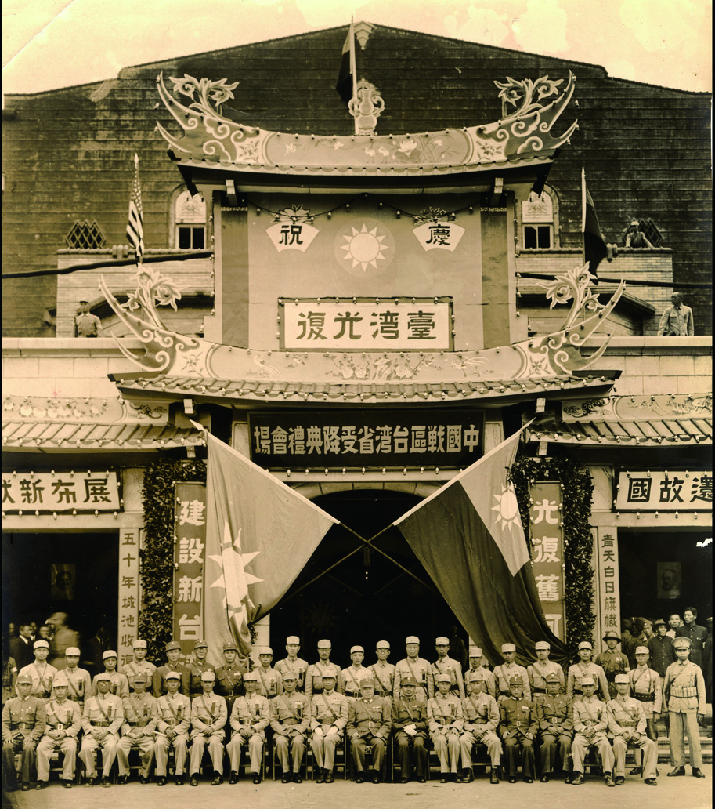
受降典禮於臺北公會堂舉行 (民國34年10月25日)二戰日本投降，中華民國接收臺灣與澎湖，定此日為「臺灣光復節」
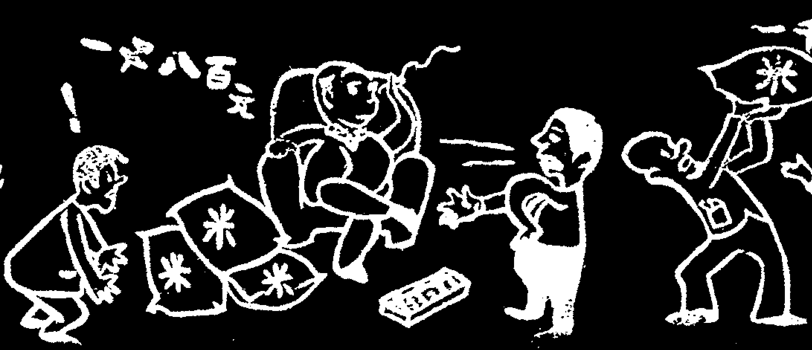
戰後初期行政長官公署高階公職籍別比例圖外省籍達 75%，本地臺籍僅 25%，引發行政資源分配不公之不滿
1. 戰後初期與二二八
1945 ~ 1947 光復節與清鄉2. 戒嚴與白色恐怖
1948 ~ 1987 限制自由與特務侵害3. 民主化與民主時代
1987 ~ 至今 解嚴、學運與政黨輪替🚨 戰後初期的統治危機
政治專制與貪腐： 戰後初期成立「臺灣省行政長官公署」，長官陳儀集軍政大權於一身，類似日治時期的總督專制。公職人員任用不均，高階官員多為中國大陸來臺人士，且部分軍警官員貪汙特權，令臺民極度失望。
物價飛漲與物資短缺： 政府實施專賣與經濟管制，加上米糧大量被運往大陸支援國共內戰，造成米荒，物價大幅上漲，民不聊生。
社會與文化隔閡： 兩岸分隔 50 年，在語言、法治觀念與生活習慣上皆有極大落差。例如：靠左走改為靠右走等規範適應，以及生活習慣上的誤解，加深了彼此的隔閡。
💥 二二八事件經過與清鄉國家暴力
事件爆發： 民國36年2月27日，專賣局查緝員於臺北市延平北路查緝私菸時，誤傷民眾並開槍打死無辜百姓。28日起，衝突蔓延全省。地方人士組成「二二八事件處理委員會」試圖重組政治改革、平息動亂。
國家暴力與清鄉： 陳儀暗中請求中央派兵增援。3月8日國軍登陸進行強制鎮壓，並隨後展開「清鄉」（清查戶口、搜繳武器）。在過程中大量槍決異議人士、知識分子（如畫家陳澄波），造成許多無辜受難者，留下難以撫平的歷史傷痕與族群裂痕。
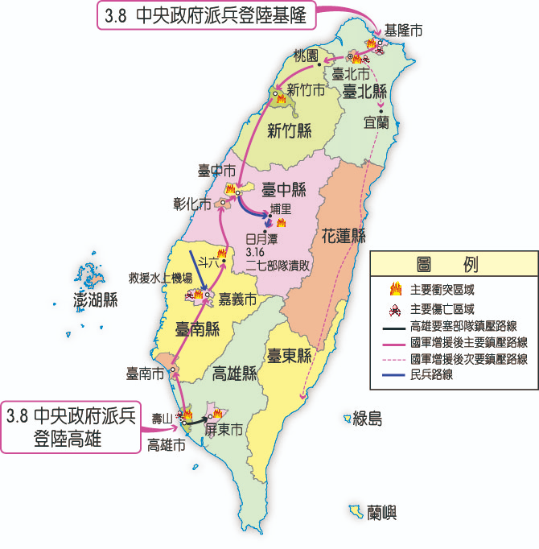
二二八事件爆發後國軍增援鎮壓路線圖軍隊登陸基隆與高雄後，迅速向全臺展開強力軍事鎮壓
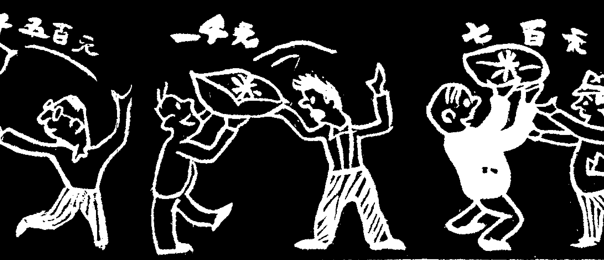
1946-1947年間米與民生物資價格大幅飆升統計惡性通貨膨脹導致民怨一觸即發，成為二二八事件的社會導火線
🛡️ 動員戡亂與戒嚴令的發布
為了防範共產黨滲透並準備國共內戰，政府於民國37年制定《動員戡亂時期臨時條款》，凍結憲法中對總統任期的限制（擴大總統職權）。
民國38年（1949）5月，臺灣省警備總司令部發布《臺灣省戒嚴令》，限制憲法賦予人民的言論、出版、集會、結社自由。同年底政府退守臺灣，開啟長達 38 年的戒嚴生活。
👁️ 白色恐怖與特務系統侵害人權
白色恐怖的實施： 政府為鞏固統治，濫用國家公權力，依靠嚴密的特務系統（警備總部），未依正常法律程序便逮捕受難者。許多人未經公開、公正的司法審判即遭定罪，造成人人自危的防諜恐怖社會。
原住民菁英遭害： 鄒族菁英高一生（日治接受高等教育，戰後熱心服務地方）於民國41年因爭取原住民自治與權利，被政府誣以「匪諜集會叛亂」逮捕並於兩年後執行死刑，是國家暴力侵害人權的鐵證。
綠島新生訓導處： 威權政府於綠島設立集中改造機構，強行收容各地逮捕的政治犯（包括女性政治犯），進行思想灌輸與監禁。
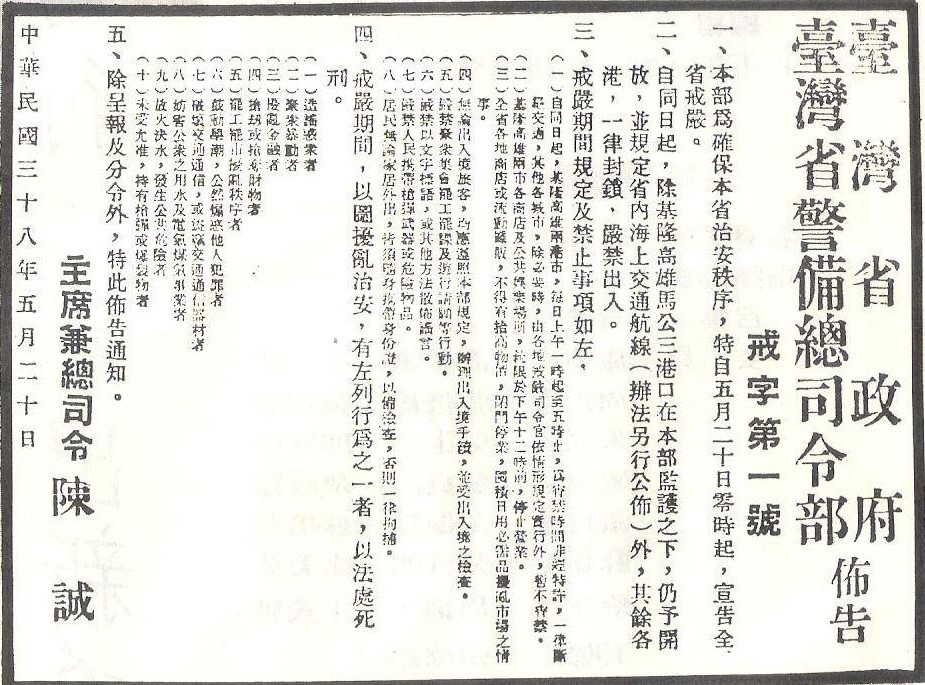
臺灣省警備總司令部佈告的「戒嚴令」（民國38年）嚴格限制人民集會遊行、散佈謠言，宵禁管制並隨身攜帶身分證
戰後致力於改善族人經濟，因爭取權益於白色恐怖時期遭槍決
💪 不斷挑戰威權與解嚴
地方自治萌芽： 民國39年起，政府為宣傳民主實行地方自治，開放基層縣議員和市長選舉，雖然高層仍由官方指派，但為民主運動奠立了選戰經驗基礎。
雷震事件（1960）： 雷震與自由中國雜誌成員寫文章反對蔣中正連任並嘗試組織「中國民主黨」，遭到逮捕與壓制。
美麗島事件（1979）： 民國68年在高雄爆發國際人權日衝突，多名「黨外」人士被捕並面臨軍法大審。美麗島大審的法庭辯護使臺灣人更加覺醒。民國75年，黨外人士突破黨禁，成立「民主進步黨」。
宣告解嚴（1987）： 蔣經國總統順應大勢，於民國76年7月宣布解除戒嚴，開放黨禁與報禁，臺灣政局大幅跨入自由時代。
🌸 廢除臨時條款與總統直選
野百合學運（1990）： 民國79年，數千名學生在中正紀念堂廣場靜坐，以臺灣野百合為象徵，提出廢除臨時條款、國會全面改選等訴求。李登輝總統順應修憲，於民國80年廢除《動員戡亂時期臨時條款》，萬年國會走入歷史。
人民直選與政黨輪替： 民國85年實行第一次總統直接選舉，由李登輝當選。此後透過選舉制度，政黨輪替已成為常態（陳水扁、馬英九、蔡英文、賴清德相繼執政），臺灣成為成熟民主國家。
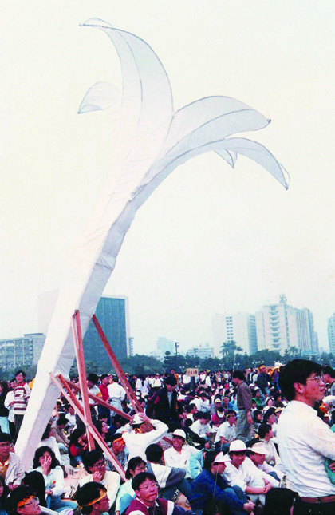
三月學運現場矗立的巨大野百合意象（民國79年）象徵學生的自主性與草根性，順利促成廢除臨時條款與國會改革
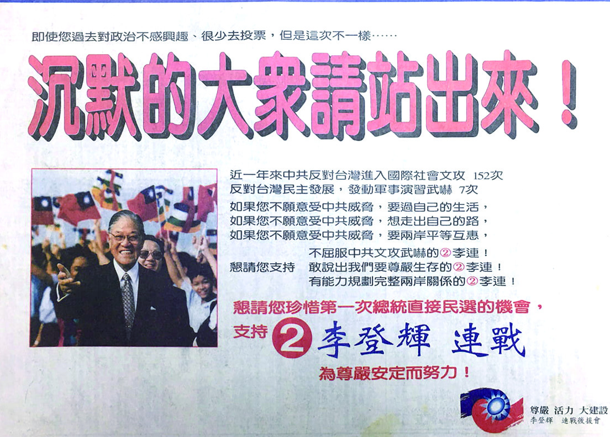
民國85年第九屆總統選舉（首次全民直接選舉）文宣李登輝與連戰搭檔競選海報，是臺灣主權在民的劃時代里程碑
🏛️ 重要歷史人物生平輪播
點選以下歷史人物，了解他們在戰後臺灣政治變遷中所扮演的關鍵角色！
陳澄波
畫家/二二八受難者
高一生
鄒族領袖/白色恐怖
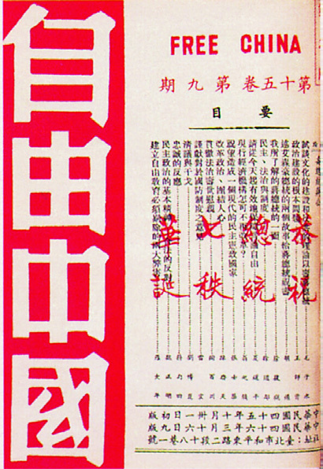
雷震
自由中國/反對黨籌組
陳儀
行政長官/集權統治

蔣經國
發布解嚴總統
李登輝
民主改革/總統直選
陳澄波
生卒年：西元 1895～1947 年日治時期首位入選帝國美術展覽會的臺灣西畫家。二二八事件爆發後，他身為嘉義市「二二八事件處理委員會」的代表之一，抱持著愛護鄉里的熱忱與軍隊進行和平協商。然而不幸遭到軍隊逮捕，並在未經司法審判的情況下在嘉義火車站前被公開槍決，為歷史留下了無法彌補的遺憾。
🗣️ 反共愛國——戒嚴時期的社會風貌
戒嚴時期，政府的反共宣傳與愛國教育深入人民的生活，塑造出緊繃與效忠的氛圍。
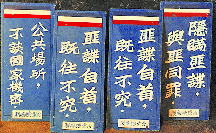
🔍 「保密防諜，人人有責」
民國40年代，工廠、學校和政府機關充斥著小心匪諜的圖畫與宣傳標語。告誡人民不能任意談論工作、如發現言行怪異的人要向安全單位密告，嚴重限縮了人民生活與言論空間。
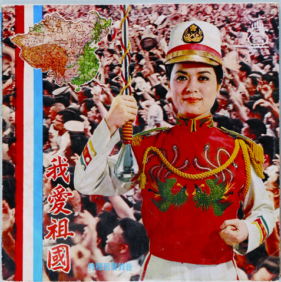
🎵 查禁歌曲與愛國歌曲推廣
政府透過新聞局審查，查禁被冠上「為匪宣傳」或「靡靡之音」的歌曲。另外大力推廣《臺灣好》、《梅花》與《中華民國頌》等愛國歌曲（淨化歌曲），規定歌星須演唱淨化歌曲才能保留歌星證。
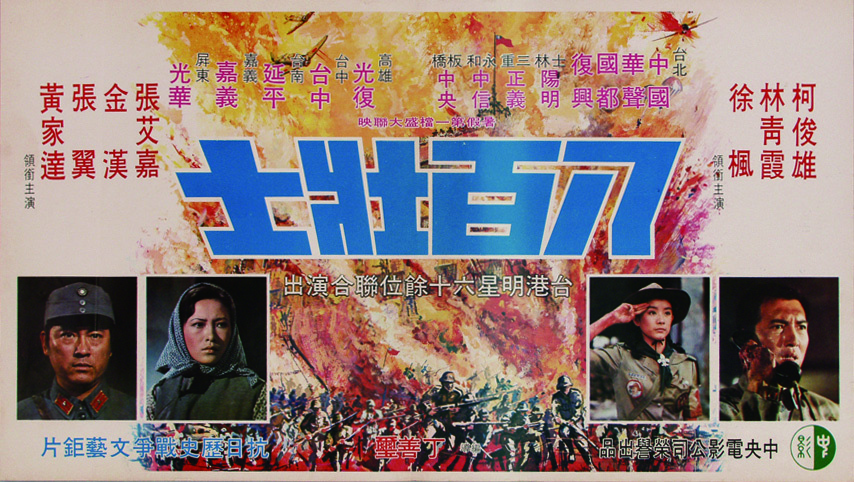
🎬 愛國電影與處變不驚
在面臨退出聯合國與中美斷交的外交挫折下，政府資助拍攝大量激勵愛國情操的電影（如《梅花》、《八百壯士》），以歷史戰爭抗日事件宣傳「莊敬自強、處變不驚」的民族精神。
📊 戰後臺灣政治體制演變總對照
本表整理了戰後臺灣政治的三個核心階段。點選「列印/儲存」按鈕，可以將本對照表直接以 A4 紙張格式列印成實體學習單喔！
| 維度 / 階段 | 一、戰後初期 (1945~1947) | 二、戒嚴與威權體制 (1949~1987) | 三、民主時代 (1987~至今) |
|---|---|---|---|
| 治臺機構 | 臺灣省行政長官公署（陳儀執政，集行政、軍事、立法大權於一身） | 臺灣省政府取代行政長官公署；特務機關（如警備總部）運用強權控制社會 | 行政院陸委會、海基會（民間委託機構）負責兩岸事務；回歸正常民主政府體制 |
| 核心法律 | 一般中華民國法律 | 動員戡亂時期臨時條款（擴大總統權力）、臺灣省戒嚴令（限制公民自由） | 廢除臨時條款與終止動員戡亂；進行多次修憲以落實民主化 |
| 基本人權 | 治臺失當、物價飛漲與隔閡，引爆二二八事件，隨後軍事鎮壓清鄉傷害人權 | 白色恐怖案件： 濫用公權力與特務抓人，侵害言論、集會、結社與出版自由 | 解除戒嚴、開放黨禁報禁；保障人民享有完整憲法基本人權與言論自由 |
| 選舉範圍 | 尚未實施地方自治 | 部分地方自治： 僅實行基層縣市長與議員選舉，省主席、直轄市長皆官方指派，中央無全面選舉 | 中央民代全面改選（終結萬年國會）；民國85年實行總統民選；政黨輪替常態化 |
| 代表受難與挑戰人物 | 陳澄波： 畫家，擔任二二八談判代表遭逮捕並槍決 | 高一生： 鄒族領袖，被控叛亂槍決；雷震： 創辦自由中國挑戰黨禁被捕 | 美麗島人士： 美麗島事件促成後續民進黨成立；野百合學生： 推動民主政治改革 |
✍️ 學習思考區（請於列印後的實體紙張上填寫）：
1. 戰後初期臺灣人對回歸懷抱希望，最終卻引爆二二八事件，你認為最主要的起因為何？
2. 白色恐怖鄒族領袖高一生案給了我們在面對「國家暴力與人權保護」上什麼樣的歷史反思？
規則：請把下方打亂的關鍵政治事件，依照歷史發生的時間順序（從早到晚，西元1947➔1987），拖曳到對應的年代格子中。若使用平板，可先點擊事件卡，再點擊年代格放入。